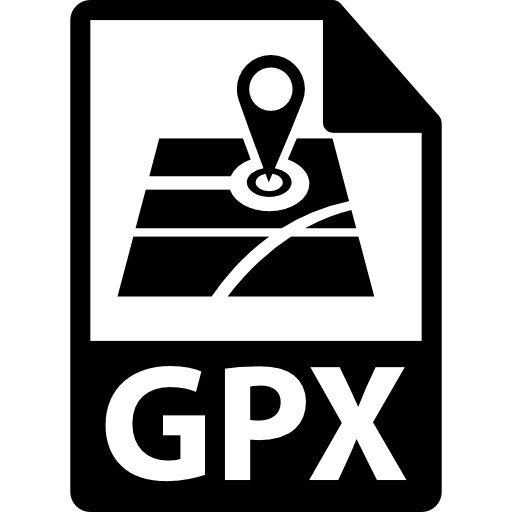

이력서
반갑습니다, 저는 이주형입니다.
3년차 웹풀스택 엔지니어로 일하고 있으며 문제해결을 통한 성장을 추구합니다.
끊임없는 배움과 시행착오를 통해 더 나은 코드를 구현하는게
개발자가 반드시 가져야할 태도라고 생각합니다.
협업과 공유를 통해 새로운 서로에게 도움이 되는 것을 좋아합니다.
직무이력👨🏻💻
Cufit
오픈라이더
2019.03 ~ 현재
 오픈라이더 서비스 API 개발
오픈라이더 서비스 API 개발
2019.03 ~ 현재
Description.
오픈라이더 앱 서비스에서 사용하고있는 REST API 신규 개발 및 유지보수를 하고,기존 레거시 코드를 리팩토링하는 작업을 진행하고 있습니다.
상세내용
기술스택
Node.js, Express, Javascript오픈라이더 웹 포탈
2019.05 ~ 2019.07Description.
오픈라이더 사용자들의 정보와 연동해서 웹에서 신규 서비스를 제공하기 위한 목적과Vue framework 적용 및 ORM 사용을 해보기 위한 실험적인 프로젝트입니다.
상세내용
기술스택
Node.js, Vue, Javascript, ORM(Sequelize), Webpack
 2019 한강 자전거한바퀴 관제시스템
2019 한강 자전거한바퀴 관제시스템
2019.07 ~ 2019.08
Description.
2019 한강 자전거 한 바퀴 행사에서 현장 관제용으로 사용되는 시스템 보수상세내용
기술스택
Java, Mybatis, Html, Javascript, Socket.io
 OPEN API 시스템 구축
OPEN API 시스템 구축
2019.08 ~ 2019.09
Description.
데이터바우처 공급기업 등록을 위한 외부제공용 OPEN API 구축상세내용
기술스택
Grivitee, Elasticsearch, Eureka
 기존 API 코드 리팩토링
기존 API 코드 리팩토링
2019.10 ~ 2020.01
Description.
기존 API 코드가 Javascript로 작성되어있어, 에러 디버깅이나 코드의 안정성 측면에서 문제가 있다고 판단되어 Typescript로 전면 변경할 계획을 했습니다.하지만 추후 일정이 생겨서 프로젝트 구축 및 샘플 API를 이관하는 단계까지만 진행하였습니다.
상세내용
기술스택
Node.js, Express, Typescript, TypeORM, Swagger 주행기록 분석
2020.01 ~ 2020.02Description.
오픈라이더 사용자들의 주행기록 파일을 분석하여 새로운 비지니스 모델을 찾고자 시작하였습니다.Strava에서 서비스하고있는 구간랭킹을 벤치마킹하여 오픈라이더 사용자의 주행기록 파일을 파싱하여 특정 구간을 달린 사람들의 주행기록을 분석해보았습니다.
상세내용
기술스택
Java, Sass Parser오픈라이더 신규포탈
2020.03 ~ 2020.06Description.
기획과 퍼블리싱을 지원받아 실서비스를 하기 위한 웹페이지를 구성하였습니다.회사에서 판매중인 자전거 용품과 제작중인 유튜브 컨텐츠를 노출하고,
오픈라이더 앱의 데이터를 웹에서도 접근할 수 있게끔 하였습니다.
상세내용
기술스택
Node.js, Javascript, Vue.js, Express, Nuxt.js, Webpack, ORM(Sequelize)
 2020 서울 자전거메이트
2020 서울 자전거메이트
2020.07 ~ 2020.11
Description.
서울시에서 주관하는 캠페인인 서울 자전거메이트를 오픈라이더를 통해 서비스하였습니다.서울 자전거 도로의 문제상황을 자전거 이용자들이 직접 신고하여 서울시 관리자가 접수 후 처리할 수 있는 플랫폼으로 사용하고자 하였습니다.
상세내용
기술스택
Node.js, Javascript, Vue.js, Express, Nuxt.js, Webpack, ORM(Sequelize), Mysql그룹라이딩 기능 개발
2020.11 ~ 현재Description.
오픈라이더 앱에서 그룹라이딩 신규기능을 추가하기 위한 기술 검증 및 테스트를 진행하였습니다.추후 업데이트에 반영될 사항으로 그룹라이딩을 하기위한 다양한 기능들을 차례대로 개발중입니다.
상세내용
기술스택
Node.js, Java, Javascript, Express, Mysql, Mqtt, Firebase오픈라이더 커뮤니티 개편
2021.02 ~ 2021.05Description.
오픈라이더 앱에서 기존에 서비스하고있는 클럽 기능 활성화를 위해 웹뷰로 전면 이관하였습니다.다양한 이벤트와 빠른 배포를 위해선 상대적으로 웹으로 구현하는게 낫다고 판단되어서 기존의 클럽 기능 이관 및 기타 메뉴를 '커뮤니티' 라는 이름으로 통합하였습니다.
상세내용
기술스택
Node.js, Javascript, Vue.js, Express, Webpack, ORM(Sequelize), MysqlDevOps.
Gitlab 서버를 구성하여 형상관리를 수행합니다.
Jenkins를 통해 소스 빌드 및 배포를 할 수 있습니다.
k8s를 통해 프로젝트를 배포한 경험이 있습니다.
ELK를 통해 시스템 모니터링을 해본 경험이 있습니다.
사용 기술
Node.js
Node.js 의 장단점을 잘 알고 있습니다.
async await 작성 방식에 익숙합니다.
다양한 모듈을 사용해보았습니다.
상대적으로 다른언어에비해 사용을 많이 해봐서 이슈사항을 많이 접해봤습니다.
Javascript
ES6 자바스크립트 문법에 익숙합니다.
비동기 동작방식에 대한 이해가 높습니다.
함수형 프로그래밍 방식에 익숙합니다.
Vue.js
컴포넌트 작성방식에 익숙합니다.
SPA에 대한 장단점을 잘 알고 있습니다.
비동기통신에 대한 경험이 많습니다.
가상DOM에 대한 이슈들을 경험해봤습니다.
프레임워크의 사용과 순수 Vue.js 사용을 둘 다 경험해봤습니다.
Java
멀티쓰레드에 대한 이해가 있습니다.
대용량 파일 처리를 위한 코드를 작성해보았습니다.
Mysql
기능개발을 위한 테이블 설계 경험이 있습니다.
쿼리 성능을 개선하기 위한 사항들을 숙지하고 있습니다.
ANSI 쿼리 작성법을 추구합니다.